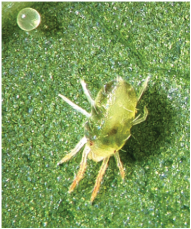
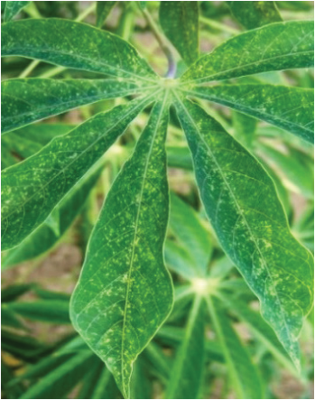

Agriculture for Secondary Schools
(b) Cassava green mites: They are tiny, greenish-yellow pests that infest
cassava plants, feeding on the undersides of leaves (Figure 3.7 (a) & (b).
Symptoms: Yellowing, mottling, death, and leaf fall.
Management: Plant early at the onset of rain because their effect is severe during
the dry season, practising crop rotation. Spray recommended insecticide.
Figure 3.7 (b): Cassava green mite damage
Figure 3.7 (a): Cassava green mite
symptoms on cassava leaf
Source:https://plantwiseplusknowledgebank.org/doi/10.1079/PWKB.20167800978
(c) Whiteflies: They are small, sap-sucking insects (Figure 3.8).
Symptoms: They suck sap from cassava leaves, leading to yellowing of leaves,
wilting, and stunting of the plant. They excrete honeydew, a sugary substance
that promotes the growth of sooty mould.
Management: Whiteflies are managed by removing and destroying infested plant
debris to prevent the spread of whiteflies. Rotating cassava with non-host crops
and practising intercropping with plants that repel whiteflies, such as marigolds,
is advisable. Insecticides can be used under the guidance of agricultural experts.
51
Student’s Book Form Two